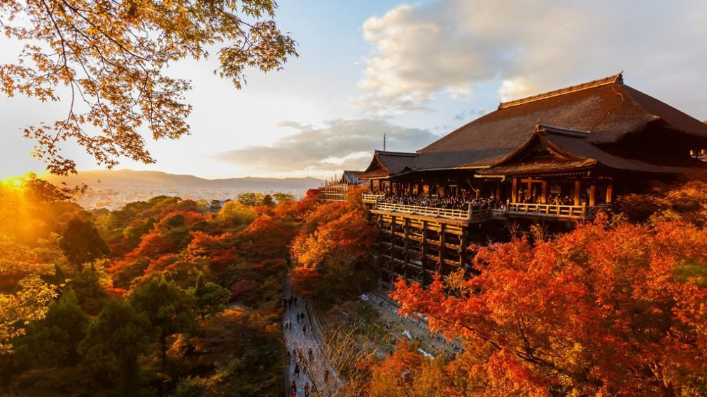
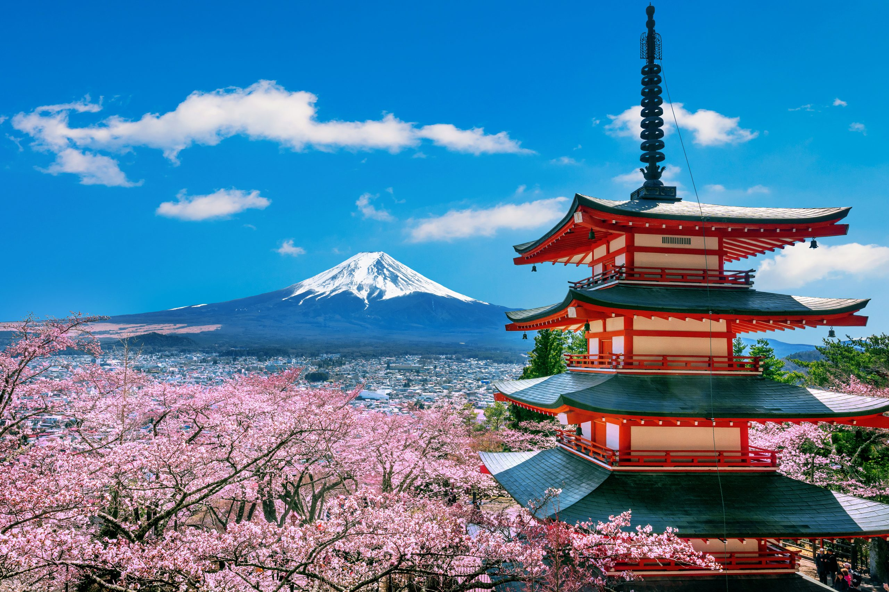

LA VILLE EMBLEMATIQUE DE KYOTO

INTRODUCTION
Kyoto ou Kyōto Écouter (京都市, Kyōto-shi?, littéralement « ville capitale ») est une ville japonaise de la région du Kansai, au centre de Honshū. Elle fut de 794 à 1868 la capitale impériale du Japon, sous le nom de Heian-kyō (« Capitale de la paix et de la tranquillité »). Elle est aujourd'hui, avec ses palais impériaux, ses milliers de sanctuaires shinto et de temples bouddhistes, le cœur culturel et religieux du pays. La ville est aussi la capitale de la préfecture de Kyoto ainsi que l'une des grandes villes de la zone métropolitaine Keihanshin (Osaka-Kobe-Kyoto). Sa population est de 1,46 million d'habitants (estimations 2020).
SITUATION GEOGRAPHIQUE
Située au centre de l'Ouest de l'île de Honshū, dans la région du Kansai, Kyoto est entourée par des montagnes, avec à l'est le lac Biwa. Seules les montagnes au nord font partie de son découpage administratif, notamment les monts Atago, Sajikiga-take (桟敷ヶ岳?) et Hiei.
PATRIMOINE CULTUREL
Avec ses 2 000 temples, ses sanctuaires, ses palais (Kyōto-gosho, palais Heian, palais Ōmiya), ses ponts, ses jardins, son architecture, Kyoto est considérée comme la capitale culturelle du Japon19. De nombreux sites patrimoniaux de Kyoto sont classés au patrimoine mondial de l'UNESCO, sous le nom « Monuments historiques de l'ancienne Kyoto (villes de Kyoto, Uji et Ōtsu) ».
Il est possible de parcourir à Kyoto la promenade du philosophe (哲学の道, Tetsugaku-no-michi?, littéralement « sentier de la philosophie »), chemin qu'empruntait le philosophe Kitarō Nishida tous les jours, afin de méditer.
Kyoto est également connue pour l'abondance de ses délicieuses denrées alimentaires20, avec la culture d'une grande variété de légumes21.
De nombreux écrivains ont écrit sur Kyoto, dont en particulier Yasunari Kawabata, prix Nobel de littérature en 1962 : son livre Kyôto (1962; titre original 'Koto', 古都?, littéralement « L' ancienne capitale ») se déroule entièrement à Kyoto et dans ses environs, est considéré comme un de ses chefs-d'œuvre.
D'apres nos recherches le sanctuarie Fushimi Inari Taisha est le plus grand sanctuaire shinto du Japon situé au sud de Kyoto. Erigé en 711, il est dédié à la déesse du riz Inari et plus largement à la richesse. La beauté de ce complexe se dévoile au gré d'une randonnée pédestre le long d'une vallée, balisée par des milliers de portiques vermillon appelés torii.
